Treat social media as an entry point.
Instagram already carries the person, story, and moment behind discovery. The product should preserve that context rather than compete with it.
Amazon Music / Vibe Sync Challenge / Product strategy
Gen Z discovers music through people, stories, and context. Streaming platforms often turn that discovery into an isolated listening session.
As Product Lead, I defined the cross-platform journey and behavioral loop connecting social discovery, personal expression, and a living music-memory archive inside Amazon Music.
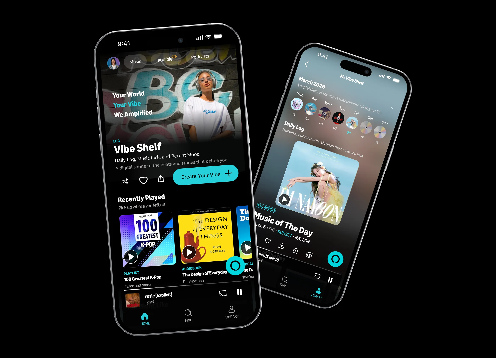
01 / The opportunity
Amazon Music needed a more culturally relevant way to attract and retain younger listeners.
Our research showed that music discovery already happens in social feeds, creator stories, and everyday moments. The problem was not access to songs. It was the loss of context when a listener moved from discovery into a streaming app.
The challenge deck records 28 participants across survey and interview research, including 8 interviews.
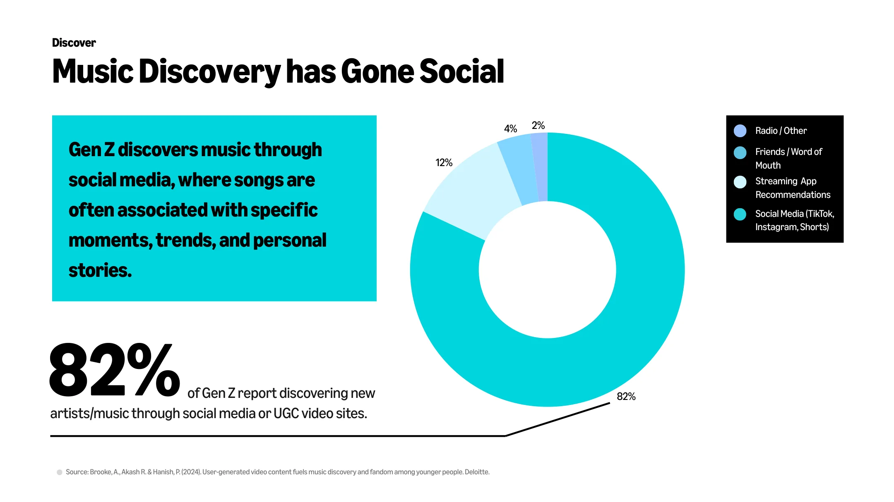
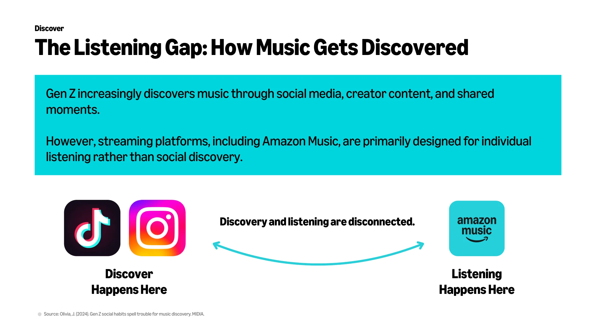
The product gap
Discovery happens socially.
Listening happens alone.
We reframed social media as an entry point, not a competitor, and asked how Amazon Music could preserve the meaning around a song after the tap.
02 / Product direction
I led the translation from research insight to product direction. Our working question was: How might we make listening worth capturing and sharing, while helping Gen Z express a feeling or moment through music?
The product decisions I drove
Instead of beginning with screens, I defined the decisions that the experience needed to resolve across discovery, creation, return, and growth.
Instagram already carries the person, story, and moment behind discovery. The product should preserve that context rather than compete with it.
A song, image, and reflection give listeners a lightweight unit of expression that feels personal enough to save and share.
The Vibe Shelf turns isolated posts into a growing record of music and memory, creating value that compounds over time.
The journey links acquisition, activation, retention, and organic growth instead of treating sharing as a decorative feature.
The principles behind those decisions
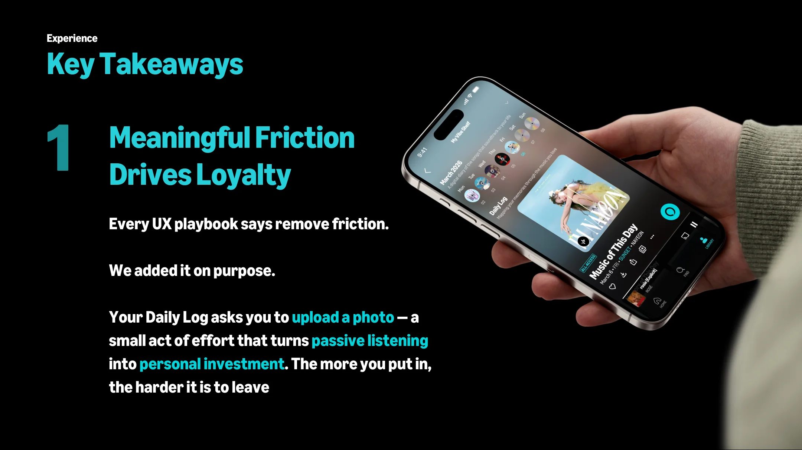
Creating a Vibe asks for a small act of authorship. That effort turns passive playback into something worth keeping.
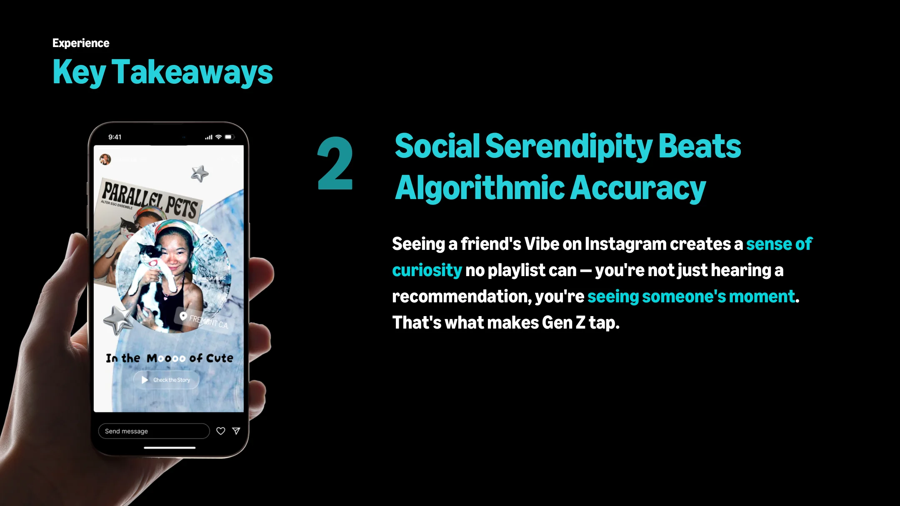
Stories, friends, and creators supply a kind of context that recommendation systems alone cannot reproduce.
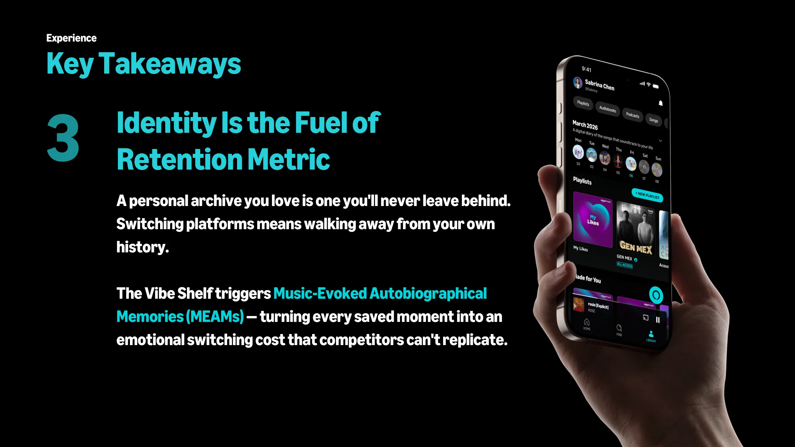
A personal archive gives listeners a reason to revisit music through the life moments attached to it.
A change in the journey
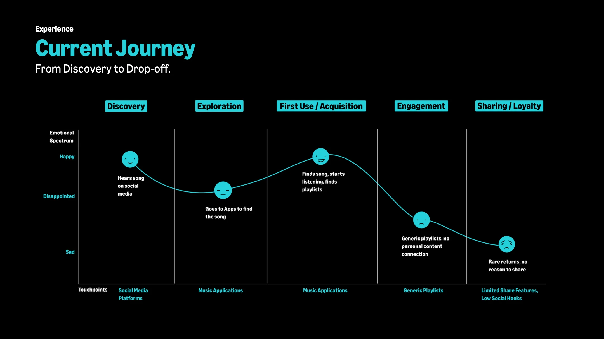
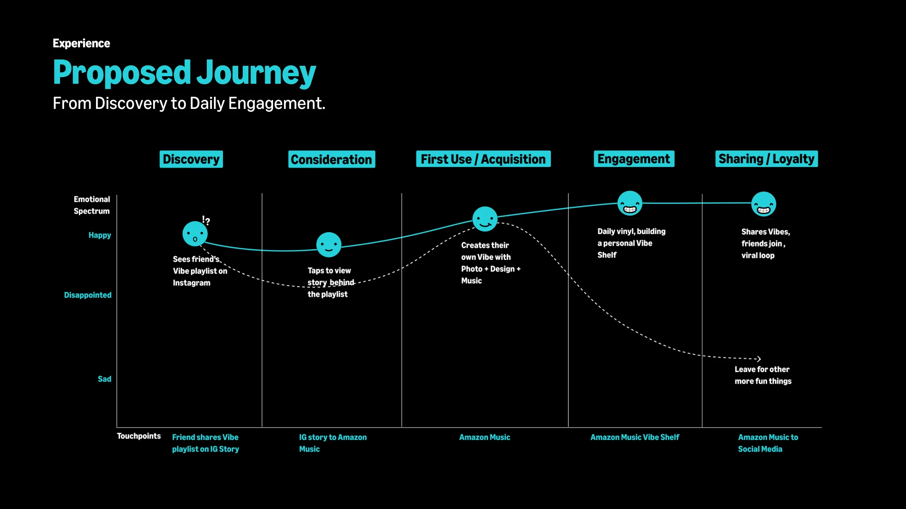
03 / The experience
I defined this loop as the product backbone: social discovery creates the pull, personal authorship drives conversion, and the archive creates a reason to stay and return.
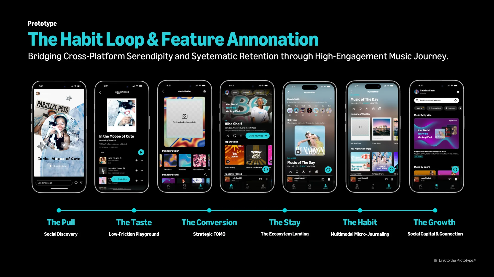
A shared Instagram story becomes a contextual preview, giving the listener a reason to move into Amazon Music without losing the person or feeling that sparked discovery.
Product intent / Make social discovery the beginning of the journey.
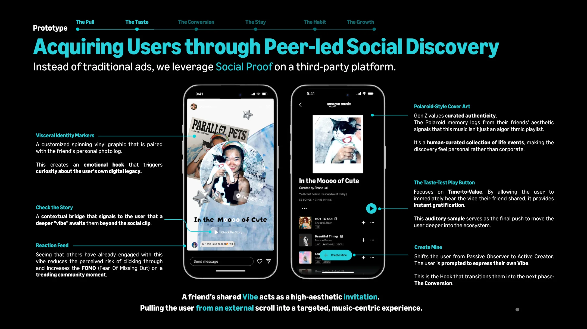
Listeners combine a song, a photo, and a short reflection. The result is expressive enough to share, but lightweight enough to create in the moment.
Product intent / Convert listening into personal authorship.
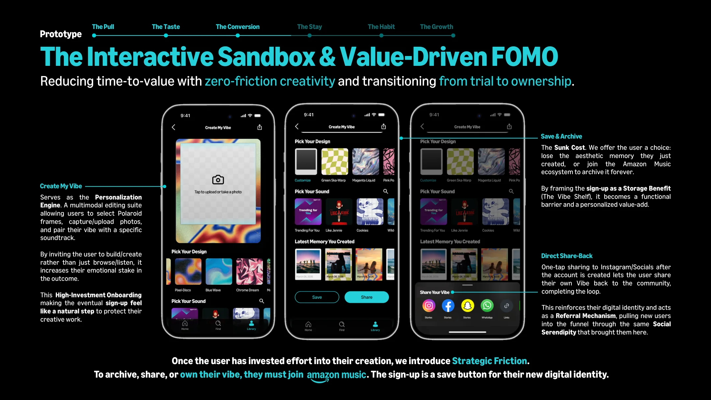
The Vibe Shelf organizes daily music and photo logs into a growing personal archive. Community discovery then extends that loop beyond the individual listener.
Product intent / Turn saved context into a reason to return.
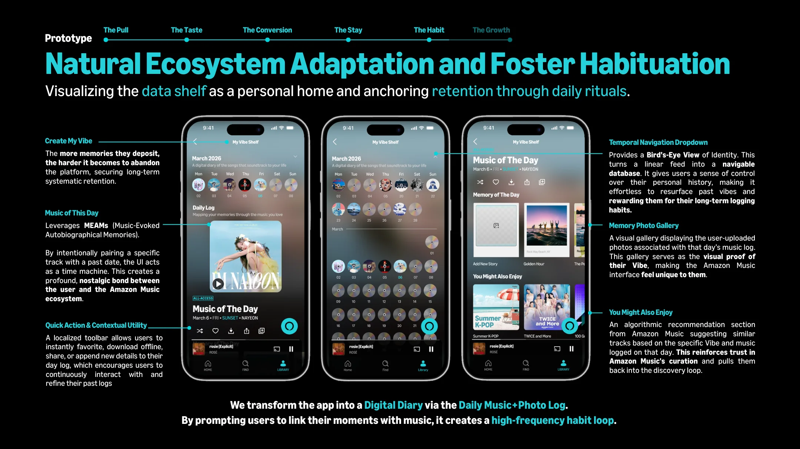
04 / Measurement framework
This was a challenge concept, not a launched product. We proposed a measurement framework to test whether the experience could improve acquisition, activation, retention, and organic growth.
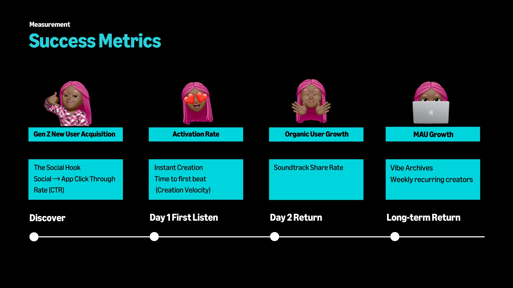
Gen Z new-user acquisition and social-to-app click-through rate.
Activation rate, soundtrack share rate, and time to first beat.
Vibe archives and weekly recurring creators.
Monthly active users and organic sharing loops.
These are proposed product metrics, not measured outcomes.
05 / Future direction
One future concept explored AI-powered memory synthesis: helping listeners revisit patterns across songs, photos, and moments without replacing the authorship that makes each Vibe personal.
Future concept only. This direction was not tested as part of the four-week challenge.
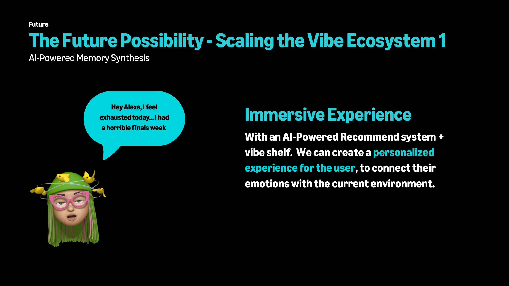
My contribution
As Product Lead in a four-person team, I defined and drove the product strategy, cross-platform journey, behavioral loop, and measurement framework.
I partnered closely with the Strategy Lead to synthesize research, with the Design Lead to translate the product logic into the prototype, and with the Account Lead to keep the concept connected to the Amazon Music business challenge.
My ownership: product framing, experience architecture, key product decisions, retention logic, and success criteria.
Explore the prototype ↗